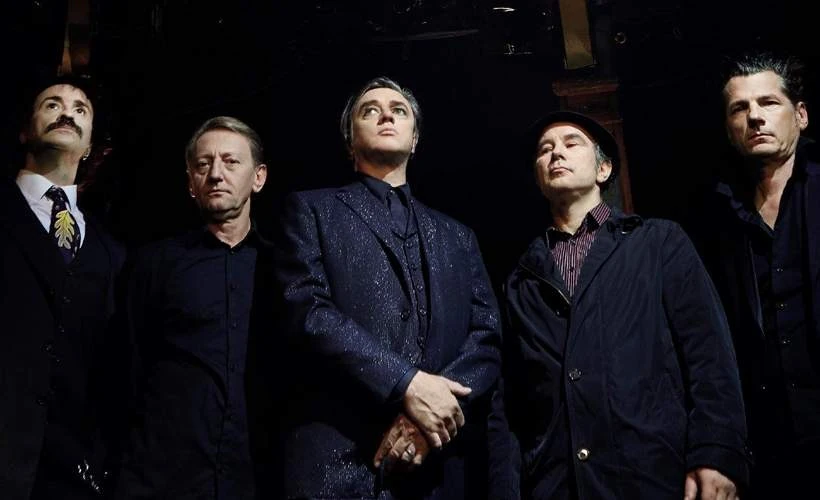
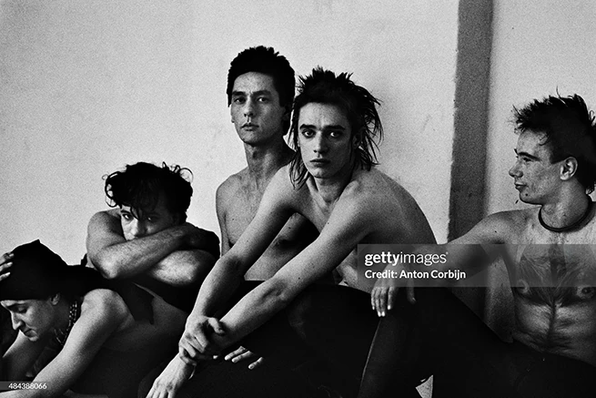
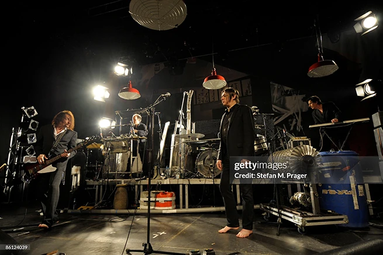
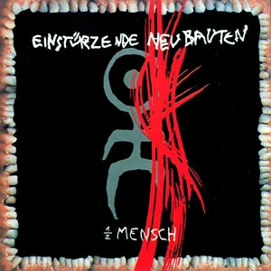
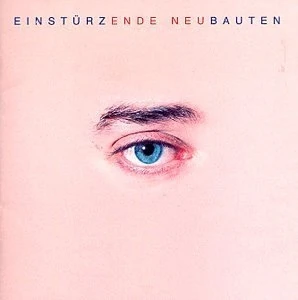
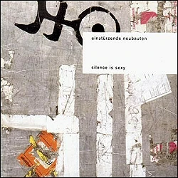

Einstürzende Neubauten är ett tyskt experimentellt rockband som bildades i Västberlin 1980. Med sin unika blandning av industriella ljud, avantgarde och elektroniska inslag har de blivit pionjärer inom industrial-musiken. Genom att använda metallskrot, byggverktyg och egenbyggda instrument skapar de ett rått, mörkt och kompromisslöst sound som ständigt utmanar gränserna för vad musik kan vara.
Bildgallerian



Albumgallerian




kr